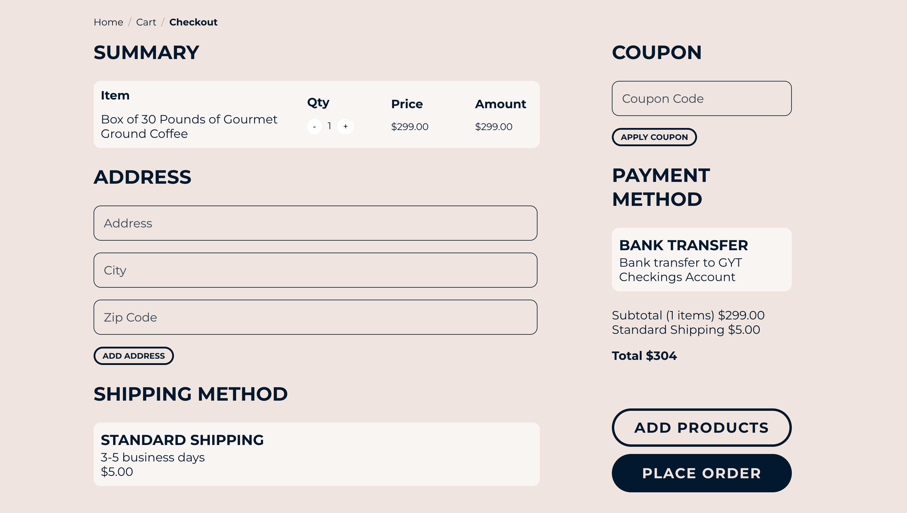
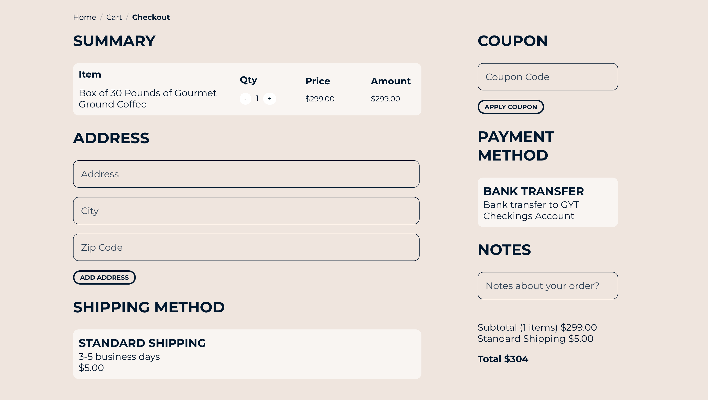
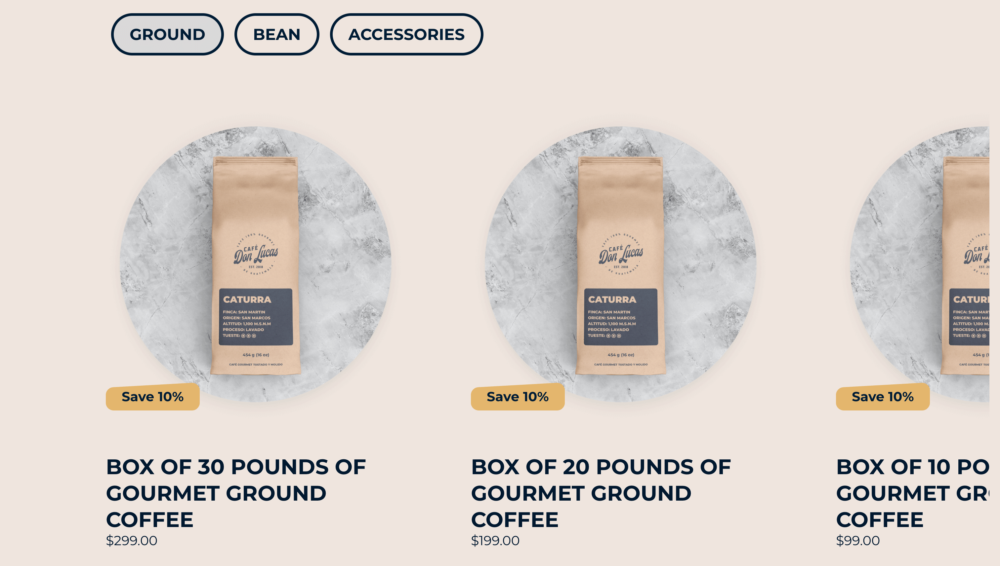
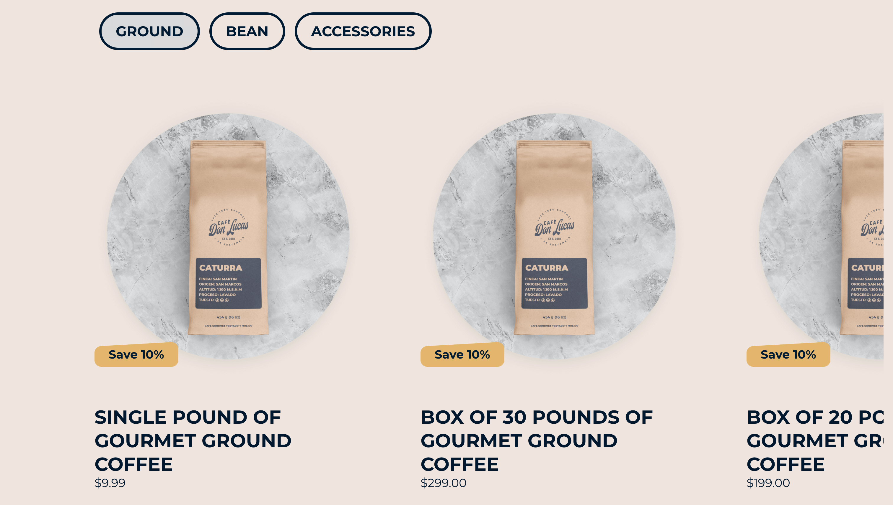
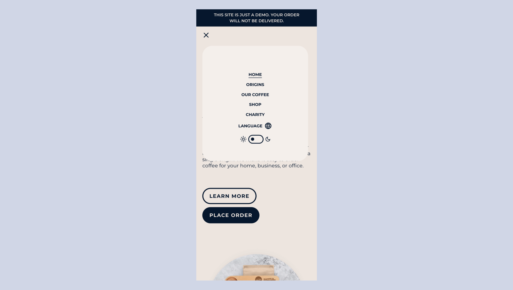
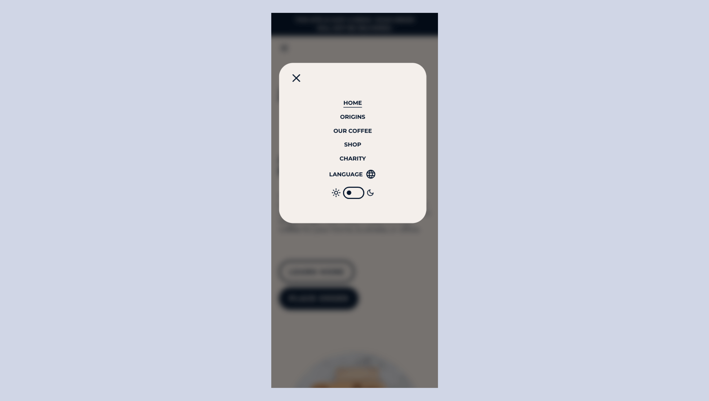

In this project, I followed the Design Thinking approach. I began with qualitative
and quantitative research to define user personas and identify pain points. Next, I used a user journey map to
ideate solutions and created wireframes and prototypes in Figma. Finally, I conducted usability testing to
refine
the design based on user feedback. Once the design was finalized, I developed the site using React.
Case Study
Project Overview
The Problem
The company faced significant challenges managing orders from their direct-to-consumer (DTC) customers
without an online store. Additionally, they were uncertain about the viability of transitioning to a
subscription-based model for retail customers.
The Goal
To conduct in-depth research to understand the coffee market landscape in the country, along with the
specific needs of end users. The objective was to design a seamless online ordering system that would be
accessible to a wide range of users while also gathering the insights needed to evaluate the feasibility of a
subscription model.
My Role
As a User Experience Designer and Developer, I led the project’s research and design process by conducting
both
quantitative and qualitative studies. My responsibilities included prototyping solutions, running usability
tests,
and ensuring the final design provided an intuitive and efficient user experience. I also developed the app in
React,
ensuring every feature functioned seamlessly.
Responsibilities
I was tasked with researching user behaviors and business needs, synthesizing that data into actionable
insights, and translating them into a functional, user-friendly solution. This solution not only streamlined
the company’s order-taking process but also provided the necessary data to assess whether a subscription model
was viable for their retail customers.
User Research
Summary
This research on coffee consumption in Guatemala combined quantitative data with interviews from 50
participants aged 25-45. It highlighted a strong coffee culture, with an average consumption of 2-4 cups per
day, and revealed a preference for convenience, such as online shopping to save time and avoid traffic. Many
participants showed interest in subscription services for potential cost savings. Insights from the
International Coffee Organization and Anacafé complemented the findings, guiding the development of a
user-friendly online coffee store.
User Personas
Sara L
”I love drinking coffee to wake up in the mornings. I like ordering online because I save time and
avoid traffic from going to the store.”
Goals
Avoiding traffic and lines by ordering online.
Saving money on everyday consumer products.
Waking up with a cup of coffee.
Frustrations
Forgetting to buy coffee.
Standing in line to pay for coffee at checkout.
Waking up late or without energy.
Sara is a 28-year-old marketer and business owner from Guatemala. She loves waking up with a
cup of coffee. She
likes to save money on everyday consumables and avoid spending time in traffic to go shopping.
User Flow
(Click on image to enlarge)
Story Board
(Click on image to enlarge)
Information Architecture
(Click on image to enlarge)
Paper Wireframe
(Click on image to enlarge)
Low-fidelity Prototype
(Click on image to enlarge)
High-Fidelity Prototype
(Click on image to enlarge)
Development
The web app was then developed using React, and it is still under active development.
(Click on image to enlarge)
Post-launch Usability Study
We conducted a Usability Study to figure out what specific difficulties users encountered when they tried to
complete the core tasks of the Café Don Lucas’ app: Product selection, ordering, and in-app navigation.
We conducted an unmoderated usability study with participants in Guatemala (remote), where participants went
through the usability study in their own homes. We interviewed 5 people from mixed backgrounds, genders, and
abilities.
We then gathered the data and organized it to identify themes, which resulted in the following insights:
Round 1 Findings
Users recommended adding a Notes field before placing an order.
Users suggested having the option for a single coffee bag selection, and not just boxes.
Users had trouble seeing the mobile menu, since the background of the page was distracting them.
Given the insights we found through our Usability Study, we adapted the design to improve the user
experience and make the web app easier to use.
Before And After






Conversion Rate Optimization (CRO)
With the online store live, the focus shifted from design to performance — measuring how effectively the
site was turning visitors into customers and identifying where they were dropping off.
Google Analytics 4
We integrated Google Analytics 4 to track the full customer journey across the site. Using GA4's funnel
exploration reports, we mapped each step from landing page to order confirmation, pinpointing the exact
screens where users abandoned the flow. Event tracking was set up for key interactions — product views,
add-to-cart clicks, checkout starts, and completed purchases — giving us a data-driven baseline to measure
CRO improvements over time.
A/B Testing
Based on GA4 drop-off data, we ran A/B tests on two high-impact areas:
Checkout CTA copy: "Place Order" vs. "Complete My Order" — the more personal phrasing
increased checkout completions by reducing hesitation at the final step.
Subscription model CTA placement: We tested a banner promoting the subscription option
at the top of the product listing vs. inline within product cards. The inline variant produced a higher
click-through rate, confirming users responded better when the offer felt contextual rather than
interruptive.
Customer Acquisition Cost (CAC)
To evaluate the efficiency of the online store launch, we calculated Customer Acquisition Cost by dividing
total sales and marketing spend by the number of new customers acquired in the first 90 days. This metric
helped the business understand how much each new customer cost to acquire through the digital channel
compared to their traditional in-person sales process. The lower CAC of the online channel validated the
investment in building the web app.
Customer Lifetime Value (LTV)
We modeled Customer Lifetime Value using average order value, purchase frequency, and estimated customer
lifespan. In a DTC model, the key split is between one-time buyers and repeat customers — and the data
showed repeat buyers carried a significantly higher LTV. This informed the decision to invest in features
that encouraged return visits: saved orders, a reorder shortcut, and the subscription CTA tested via A/B.
The LTV model also set the prioritization for future optimizations — retention-focused improvements
consistently outranked acquisition-focused ones in expected return.
Accesibility
The website was designed for accessibility with Spanish and English language options, ensuring seamless
navigation for all users. Dark and Light modes were added to accommodate visual preferences and improve
usability in different lighting conditions, creating a more inclusive and adaptable user experience.
Takeaways
User Preferences: The research highlighted that customers value quality over price when
it
comes to coffee consumption. Many participants indicated a willingness to pay a fair price for premium
coffee
rather than opting for cheaper products.
Subscription Model Feasibility: Although there was interest in a subscription model, the
company decided against it, prioritizing their focus on quality to avoid any perception of offering
lower-tier products.
Enhanced Customer Experience: Instead of adopting a subscription-based model, the company
focused on enhancing the customer experience by streamlining the order process for DTC customers and
improving service delivery.
Focus on Fair Pricing: The company’s decision to maintain a fair and profitable pricing
strategy supports its commitment to quality, ensuring the delivery of premium products and fostering
customer loyalty
Long-Term Customer Relationships: By focusing on customer experience and quality instead
of discounts, the company aims to build lasting relationships with DTC clients, ensuring sustainable growth
and profitability in the competitive coffee market.
Let's get in touch
Have a project in mind? Let's build something great together!